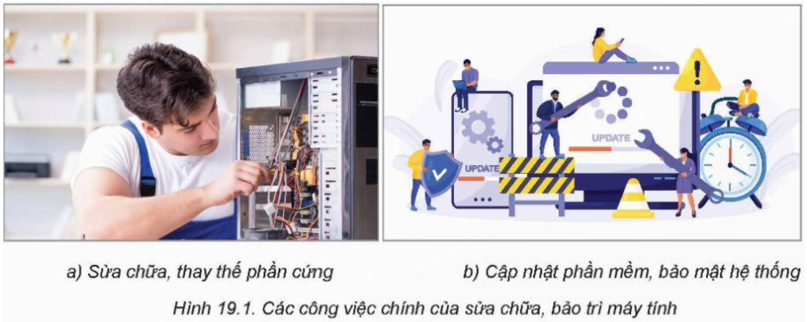

1. DỊCH VỤ SỬA CHỮA VÀ BẢO TRÌ MÁY TÍNH
Ngày nay công nghệ thông tin đã xâm nhập vào mọi lĩnh vực trong cuộc
sống. Các nghề dịch vụ thuộc ngành Công nghệ thông tin có nhiệm vụ hỗ trợ,
phát triển và duy trì các hệ thống công nghệ thông tin cho cá nhân, doanh
nghiệp và tổ chức. Trong số đó, sửa chữa, bảo trì máy tính là một nghề
dịch vụ công nghệ thông tin có vai trò quan trọng. Các công việc của nghề
này nhằm duy trì sự ổn định của máy tính cũng như các thiết bị liên quan
tới máy tính, giúp người dùng được hỗ trợ kỹ thuật khi cần. Như vậy, tất
cả các công việc để đảm bảo máy tính hoạt động một cách ổn định, hiệu quả
đều nằm trong nội dung sửa chữa và bảo trì máy tính. Máy tính và các thiết
bị công nghệ thông tin chỉ có thể hoạt động cùng với phần mềm trong những
điều kiện môi trường phù hợp. Do đó, sửa chữa, bảo trì phần cứng không
tách rời khỏi việc duy trì phần mềm đi kèm và đảm bảo môi trường hoạt động
cho cả hệ thống (Hình 19.1).

Vì thế, người làm nghề sửa chữa và bảo trì máy tính cần thực hiện
một số công việc chính như:
-
Liên quan tới phần cứng:
- Kiểm soát và duy trì hoạt động của máy tính.
- Kiểm soát và duy trì hoạt động của máy tính.
- Kiểm soát và duy trì hoạt động của máy tính.
- Kiểm soát và duy trì hoạt động của máy tính.
- Kiểm soát và duy trì hoạt động của máy tính.
- Kiểm soát và duy trì hoạt động của máy tính.
-
Liên quan tới phần mềm:
-
Cài đặt hoặc cập nhật phần mềm điều khiển thiết bị ngoại vi.
-
Cài đặt, cấu hình các phần mềm thông dụng như hệ điều hành, cấu
hình mạng và các ứng dụng văn phòng.
-
Cập nhật các phiên bản mới của phần mềm để đảm bảo tính an toàn và
hiệu quả.
- Đảm bảo kết nối máy tính vào mạng.
-
Rà soát an toàn của hệ thống bằng cách quét mã độc và cấu hình
phần mềm phòng chống virus.
-
Liên quan tới hỗ trợ người dùng:
-
Hướng dẫn người dùng sử dụng máy tính và thiết bị công nghệ thông
tin đúng cách và hiệu quả.
- Hướng dẫn người dùng sử dụng các phần mềm thông dụng.
Thiết bị công nghệ thông tin và phần mềm rất đa dạng. Không ai có
khả năng sửa chữa và bảo trì tất cả các thiết bị công nghệ thông tin. Do
vậy, trong thực tế, các đơn vị thực hiện dịch vụ sửa chữa, bảo trì thường
có sự phân công chuyên trách, mỗi chuyên viên phụ trách chuyên sâu một số
mảng thiết bị và phần mềm cụ thể. Dưới đây là một số yêu cầu kiến thức
chung cần thiết để làm nghề sửa chữa, bảo trì máy tính:
-
Kiến thức về phần cứng: Hiểu biết về các
thành phần cơ bản của máy tính. Biết cách kiểm tra, tháo lắp, sửa chữa
hoặc thay thế phần cứng khi cần thiết.
-
Kiến thức về phần mềm: Thực hiện được
việc cài đặt, cấu hình và sửa chữa các phần mềm như hệ điều hành, phần
mềm văn phòng, trình duyệt web và các phần mềm khác. Bên cạnh đó, cần
biết cách phát hiện cũng như loại bỏ virus và phần mềm độc hại.
-
Kiến thức về mạng: Có kiến thức cơ bản
về mạng máy, tính bao gồm các phương pháp kết nối và cấu hình mạng cục
bộ cũng như mạng Internet.
Bên cạnh đó, để nâng cao hiệu quả và năng suất làm việc, người làm
nghề này cũng cần có một số kỹ năng mềm như:
-
Kĩ năng học hỏi, cập nhật kiến thức: Theo dõi, cập nhật để có hiểu biết về công nghệ mới.
-
Kĩ năng giải quyết vấn đề: Kĩ năng giải
quyết vấn đề:
-
Kĩ năng giao tiếp: Có khả năng giao tiếp
tốt với người dùng để hiểu các yêu cầu của họ và giải thích, tư vấn
cho họ các giải pháp kỹ thuật một cách dễ hiểu.
-
Kĩ năng quản lý thời gian: Có khả năng
quản lý thời gian để hoàn thành dự án sửa chữa, bảo trì trong thời
gian quy định và đáp ứng yêu cầu của khách hàng.
2. NHU CẦU NHÂN LỰC CHO DỊCH VỤ SỬA CHỮA, BẢO TRÌ MÁY TÍNH VÀ NGÀNH HỌC
LIÊN QUAN
Trong tương lai gần, nhu cầu về nhân lực làm nghề sửa chữa và bảo
trì máy tính dự kiến sẽ tăng lên. Cuộc cách mạng công nghiệp 4.0 dẫn đến
sự phổ biến của máy tính, thiết bị kỹ thuật số cũng như sự bùng nổ của các
thiết bị kết nối, đặt ra thách thức cho việc duy trì và sửa chữa các hệ
thống này. Người làm nghề sẽ phải đối mặt với một khối lượng công việc
ngày càng lớn và đa dạng. Mô hình làm việc từ xa và sự gia tăng của dịch
vụ trực tuyến cũng đặt ra thách thức mới cho người làm nghề, yêu cầu họ
phải có kỹ năng chẩn đoán và sửa chữa lỗi từ xa. Đồng thời, với đòi hỏi
ngày càng cao về bảo mật thông tin, người làm nghề sẽ phải nắm vững các
biện pháp bảo mật và an toàn. Như vậy, với sự phát triển nhanh chóng của
công nghệ, ngành nghề sửa chữa và bảo trì máy tính sẽ là một trong những
lĩnh vực có nhu cầu nhân lực ngày càng cao cả về số lượng lẫn chất lượng.
Cũng chính vì vậy, việc không ngừng trang bị kiến thức và kỹ năng thiết
yếu để đáp ứng các nhu cầu công việc trong nhóm nghề này càng trở nên cần
thiết.
Ở Việt Nam, các cơ sở giáo dục và đào tạo đều có các ngành đào tạo
liên quan đến ngành nghề sửa chữa và bảo trì máy tính. Ví dụ: Kĩ thuật sửa
chữa, lắp ráp máy tính; Công nghệ kĩ thuật phần cứng máy tính; Công nghệ
kĩ thuật phần mềm máy tính; Công nghệ thông tin;...
Tuy nhiên, đối với việc sửa chữa, bảo trì thì mức độ thành thạo
trong công việc là yếu tố quan trọng nhất. Các trường dạy nghề ở bậc Cao
đẳng thường có điều kiện nhiều hơn để đảm bảo điều này. Ở bậc Đại học, kĩ
năng sửa chữa thiết bị cụ thể ít được chú ý hơn, nhưng sinh viên được đào
tạo tốt về nguyên lí hoạt động của máy tính và thiết bị công nghệ thông
tin. Do vậy, người sửa chữa, bảo trì có trình độ đại học có thể giải quyết
được các vấn đề phức tạp, có khả năng tìm hiểu được các thiết bị mới vốn
đòi hỏi kiến thức cao. Môi trường công ty cũng góp phần giúp người sửa
chữa, bảo trì học hỏi được từ thực tiễn và từ đồng nghiệp.